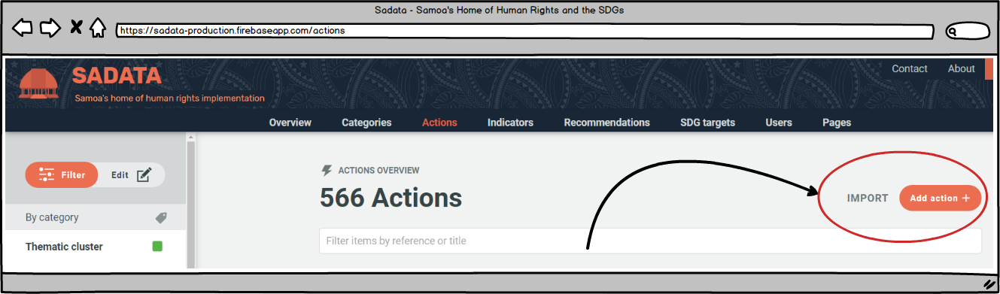
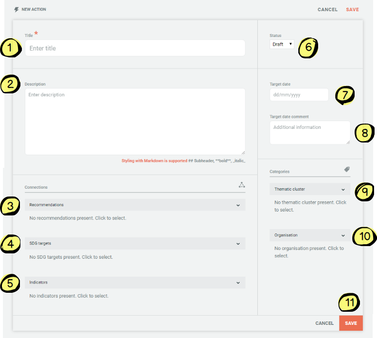
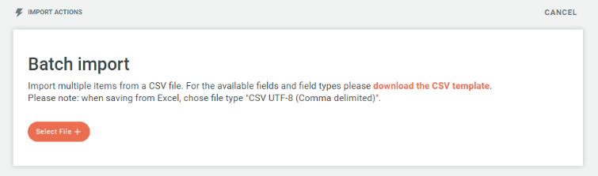
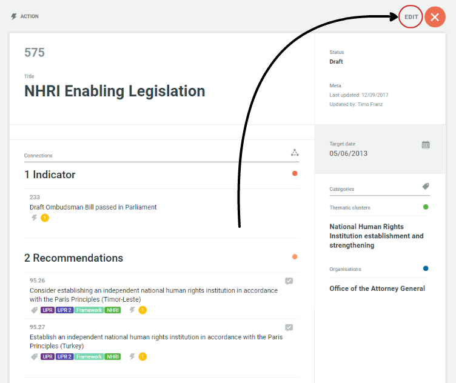

4.4 Actions
Administrators and Managers can 'add or edit' data via the Actions page.
Adding Actions
There are two ways for an Administrator to add actions:
-
Add single actions
-
Import a file of multiple actions

Both methods of adding actions can be accessed via the buttons in the top right hand corner of the actions page (pictured above).
Adding a single action:
Click on the 'Add Action' icon and the following form will appear:

-
Title: Short title of action
-
Description: Additional details of action
-
Recommendations: Clicking on the drop down menu allows the Administrator to link the Action to any of the recommendations contained within the database. At the bottom of the drop down menu is also an 'Add' button where the Administrator can choose to add a new recommendation from here to link to the Action if they wish.
-
SDG Targets: Clicking on the drop down menu allows the Administrator to link the Action to any of the SDG targets. At the bottom of the drop down menu is also an 'Add' button where the Administrator can choose to add a new SDG Target from here to link to the Action if they wish.
-
Indicators: Clicking on the drop down menu allows the Administrator to link the Action to any of the Indicators. At the bottom of the drop down menu is also an 'Add' button where the Administrator can choose to add a new Indicator from here to link to the Action if they wish.
-
Status: Automatically set to draft, the Administrator can change this to public once the Action is ready to be published on the public site. The status of actions can also be changed in bulk using the filtering system on the Actions page (see below)
-
Target date: The target date for completion of the activity
-
Target date comment: Any relevant comments regarding the target date (optional)
-
Thematic cluster: Clicking on the drop down menu allows the Administrator to link the Action to any of the pre-existing Thematic Clusters. By linking an action to a thematic cluster it will automatically be linked to all of the recommendations contained within that cluster. At the bottom of the drop down menu is also an 'Add' button where the Administrator can choose to add a new Thematic Cluster from here to link to the Action if they wish
-
Organisation: Clicking on the drop down menu allows the Administrator to assign primary responsibility for an Action to an Organisations. At the bottom of the drop down menu there is an' Add' button where the Administrator can add a new organisation if the relevant one has not already been entered
-
Cancel/Save: This is where the Administrator can save all of the details that have been entered, or clear the form using the cancel button
Adding multiple actions
By clicking on the 'Import' button (top image) the Administrator will be provided with a CSV template download (see image below) for batch importing multiple Actions. Once in the required format the Administrator can click on the 'Select File' button and upload their file and all of the Actions will automatically be imported.

Editing Actions
There are also two ways in which Actions can be edited; individually and batch editing.
Individual editing
Individual editing is as simple as finding the action you wish to edit, using the search and filtering functions and clicking on the action title in question, which brings up the following screen with an Edit button (circled):

Clicking the edit button allows the Administrator to edit all of the fields associated with that action including:
- Adding/editing the responsible organisation
- Adding/editing thematic clusters the action is linked to
- Adding/editing the recommendations the action is linked to
- Adding/editing the indicators the action is linked to
- Adding/editing the SDG targets the actions is linked to
- Editing the draft/public status of the action
- Editing the target date and target date comments
- Deleting the action
Batch editing
Batch editing of actions (or other entities such as recommendations, indicators or SDG targets) is a powerful feature that allows Administrators to efficiently edit actions in a variety of ways including:
- By setting the status of multiple actions from draft to public
- By linking multiple actions with any category (i.e. a thematic cluster or organisation)
- By linking multiple actions with any connected category (i.e. human rights body, cycle, issue, affected persons or SDG)
- By linking multiple actions with any connection (i.e. Indicators, recommendations or SDG targets)
Batch editing is a simple process - first the Administrator needs to identify and select the actions they wish to batch edit and then secondly they update the selected actions as they wish.
- The Administrator can select the actions they wish by first using the filtering and search functions to bring up the relevant actions on their screen. More information on how to use these functions can be found here. Once the relevant actions have been identified the Administrator can either:
- Select individual actions using the checkbox next to each action (see #1 on image below)
- Select all actions on the page displayed (see #2 on image below)
- Select all actions returned by the search and filtering results if they do not fit onto a single display page (see #3 on image below)

- Once the relevant actions have been selected the Administrator can then use the menu on left hand side of the screen to link the selected actions to any category, connected category or connection. For example, if the selected actions were to be linked to a particular thematic cluster the Administrator would click on the thematic cluster title in the left hand menu bar and the box 1 below will appear. Box 2 shows what happens when the Administrator selects the thematic cluster they wish to link to the actions:

-
The Administrator can use the filter box to search for the thematic cluster (or category/sub-category/connection) they wish to find
-
Where some, but not all of the selected actions are already linked to a thematic cluster the Administrator is shown a box with a horizontal line. By clicking once on any of these boxes (so that a tick appears) and then 'Update' the Administrator could update the thematic cluster to either be linked with **all **of the selected actions. By clicking on the box twice (so that the box is empty) and then 'Update' the Administrator can unlink all of the selected actions from that thematic cluster.
-
Where a thematic cluster is not currently linked to any of the selected actions the Administrator is shown a blank box. By clicking once in any of these boxes (so that a tick appears) and then 'Update' the Administrator could update the thematic cluster to either be linked with **all **of the selected actions. In this example, the box on the right demonstrates how this works if the Administrator selects 'CRPD Implementation'
-
If a thematic cluster does not exist which the Administrator wishes to link all of the selected actions to they can create one using this button
-
At the top of the list is a summary of how many thematic clusters are already linked to all or some of the actions. By clicking once on this box (so that a tick appears) and then 'Update' the Administrator can link all of the selected actions to all of the thematic clusters. By clicking on the box twice (so that it is blank) and then 'Update' the Administrator can unlink all of the selected actions from all of the thematic clusters.
-
When a thematic cluster is selected then a tick will appear in the box
-
The 'Update' button will only be active once the Administrator has made one of the changes described above. Clicking on the update button will save those changes. This may take several seconds if editing a large number of actions at once.